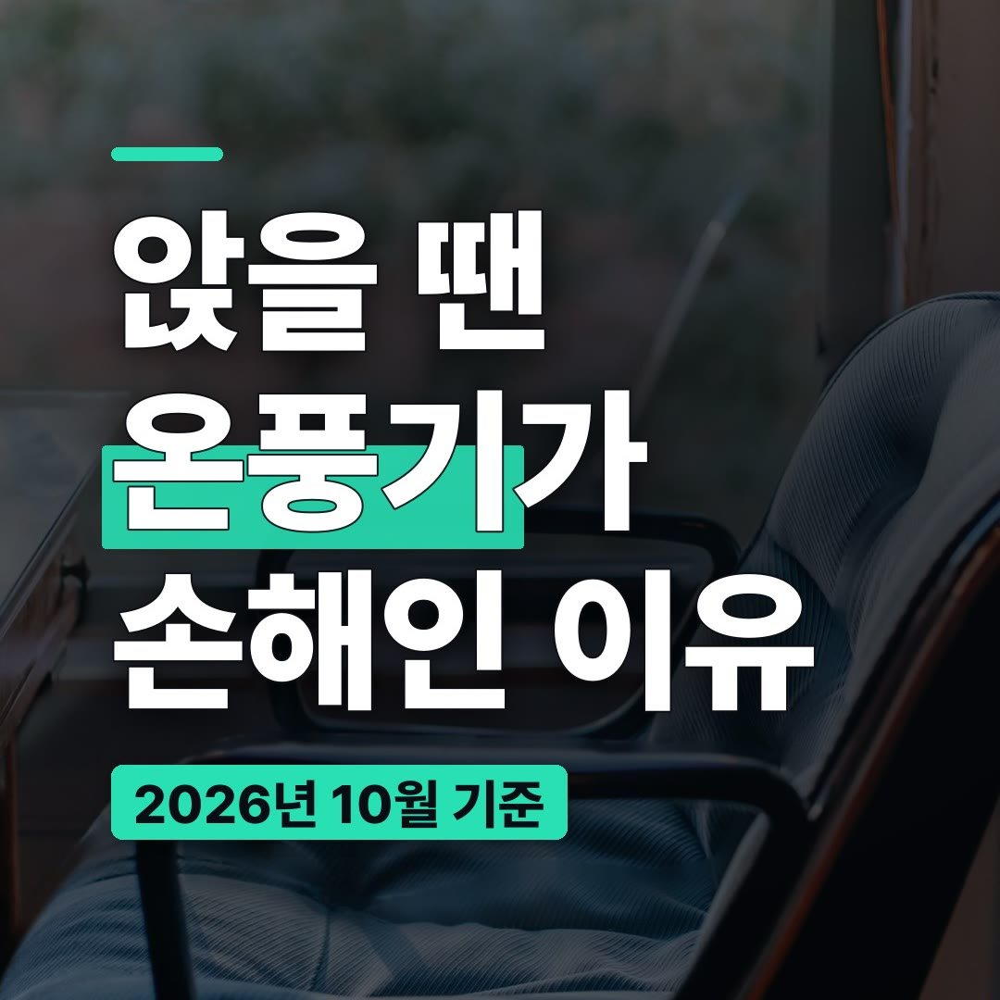
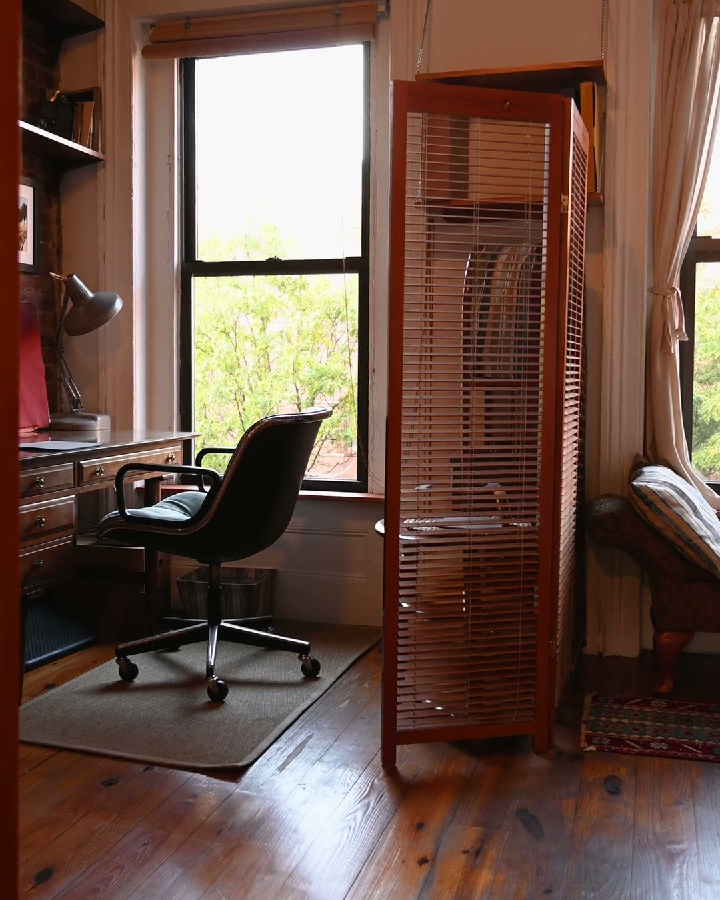
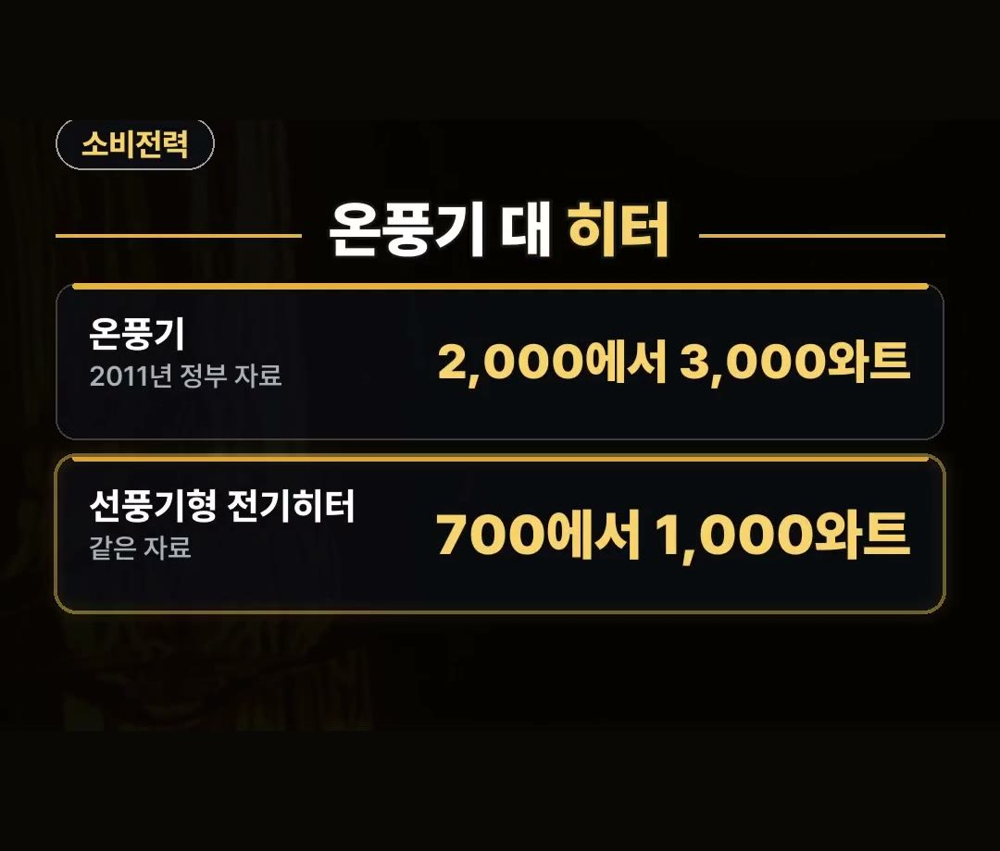
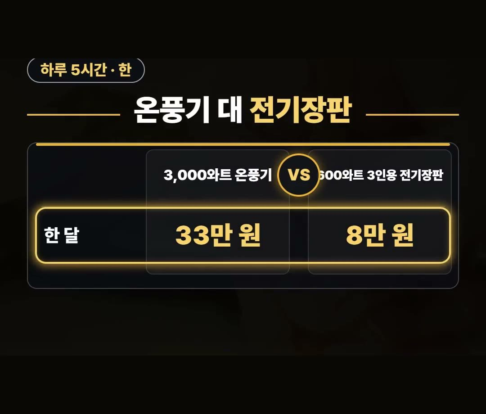
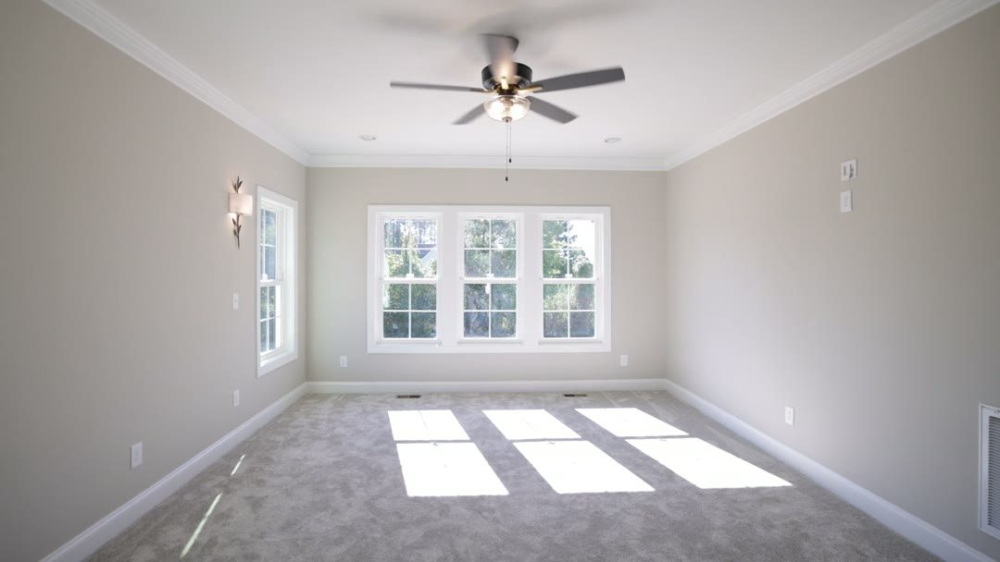
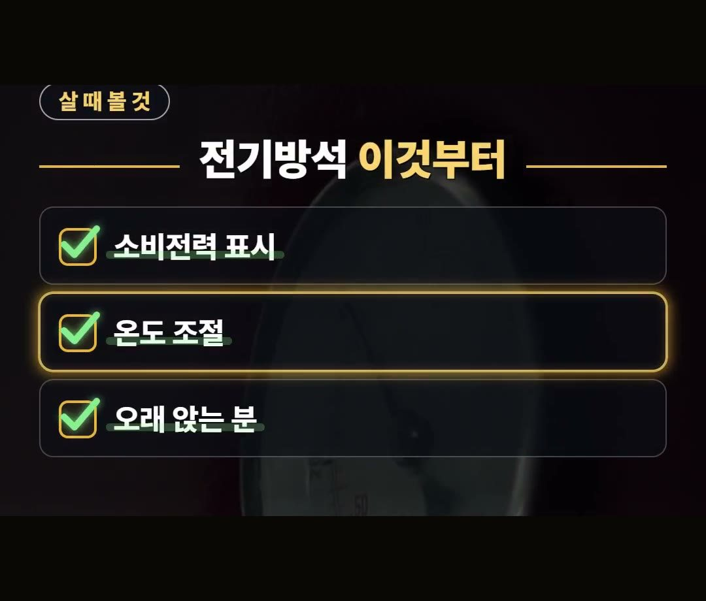

전기방석 추천 전에, 온풍기 33만 원과 전기장판 8만 원이 갈린 이유 정리
※ 이 글에는 제휴 링크가 포함되어 있으며, 링크를 통해 구매하시면 일정 수수료를 받을 수 있습니다. (가격은 같습니다)
※ 이 포스팅은 쿠팡 파트너스 활동의 일환으로, 이에 따른 일정액의 수수료를 제공받습니다.
※ 이 콘텐츠는 토스쇼핑 쉐어링크 활동의 일환으로, 링크를 통한 구매가 발생하면 일정 수수료를 지급받습니다.
10월 말로 접어들면 책상 앞이나 소파에 앉아 있을 때 몸이 먼저 차가워지기 시작하죠.
이맘때 많은 분이 온풍기부터 꺼내지만, 앉아서 오래 지내는 분이라면 무엇을 켜느냐에 따라 전기 쓰는 양이 크게 갈립니다.
이 글에서는 온풍기와 전기히터의 소비전력, 같은 실험에서 나온 한 달 요금, 전기방석 살 때 볼 점을 차례로 정리했어요.
2011년 정부 자료에선 3,000와트 온풍기를 하루 5시간씩 한 달 쓰니 33만 원, 600와트 3인용 전기장판은 8만 원이 나왔어요.
몸만 데우면 되는 자리라면 이 차이 하나는 꼭 기억하세요! 🪑

추우면 온풍기부터 켜는 이유와 착각
날이 추워지면 다들 온풍기부터 켜요.
그런데 온풍기는 방 공기 전체를 데우는 물건입니다.
방 안 어디에 있든 따뜻하게 해 주지만, 그만큼 전기를 쓰는 쪽이에요.
반대로 책상 앞에 앉아 일하거나 공부하는 시간이 길다면, 데워야 하는 곳은 사실 몸이 닿는 자리뿐일 때가 많습니다.
이럴 때 방 전체를 데우는 온풍기와 몸 닿는 곳만 데우는 방석은 쓰임이 달라요.

온풍기 2,000에서 3,000와트, 선풍기형 히터 700에서 1,000와트
2011년 정부 자료(대한민국 정책브리핑)에 실린 소비전력은 이렇습니다.
- 온풍기: 보통 2,000에서 3,000와트
- 선풍기형 전기히터: 700에서 1,000와트
오래된 자료라 요즘 제품은 표시값이 다를 수 있어요.
그래서 살 때는 제품에 적힌 소비전력 표시를 직접 보는 것이 먼저입니다.

하루 5시간씩 한 달, 33만 원과 8만 원
같은 자료에 에너지관리공단 실험 결과도 실렸어요.
- 3,000와트 온풍기: 하루 5시간씩 한 달 33만 원
- 600와트 3인용 전기장판: 같은 조건 8만 원
자료에서는 온풍기 요금이 많이 나온 까닭으로 누진제를 들었어요.
2011년 요금 기준이라 지금 요금과는 다르니, 숫자 자체보다 차이의 크기로 기억해 두세요.

같은 매트류도 제품마다 달라요
방석이나 장판 같은 매트류는 다 비슷해 보이지만 그렇지 않습니다.
2020년 한국소비자원 전기장판 시험에서는 최고 온도로 8시간 켰을 때 소비전력량이 제품에 따라 최대 1.6배 차이가 났어요.
이 시험은 전기장판을 대상으로 한 것이라 모든 전기방석에 같은 숫자가 나온다고 넓혀 말할 수는 없어요.
다만 같은 종류 안에서도 제품마다 전기 쓰는 양이 다를 수 있다는 점은 알아 두시면 좋습니다.
같은 자료에서는 최고 온도로 오래 쓰면 화상 우려가 있다고도 했어요.
따뜻하다고 높은 온도로 오래 두기보다는 온도를 조절해 가며 쓰는 것이 좋습니다.

전기방석 추천 전에 볼 점과 맞는 분
전기방석 1인용이든 전기방석 2인용이든, 고를 때 볼 점을 정리했습니다.
- 소비전력 표시: 제품마다 몇 와트인지
- 온도 조절: 높은 온도로 오래 두지 않도록 조절할 수 있는지
- 쓰는 사람: 책상 앞이나 의자에 오래 앉는 분인지
앉아서 오래 지내는 분께는 몸 닿는 곳만 데우는 전기방석이 잘 맞습니다.
반대로 여럿이 함께 지내는 거실처럼 방 공기 전체가 따뜻해야 하는 경우라면, 방석 하나만으로는 쓰임이 다를 수 있어요.
참고로 상품 설명에 따르면 가로세로 45센티미터 크기의 1인용 황토 전기방석도 있다고 합니다.

정리
- 2011년 정부 자료에선 온풍기가 보통 2,000에서 3,000와트, 선풍기형 전기히터가 700에서 1,000와트를 써요.
- 같은 실험에서 하루 5시간씩 한 달, 3,000와트 온풍기는 33만 원, 600와트 3인용 전기장판은 8만 원이 나왔어요.
- 2020년 소비자원 전기장판 시험에서는 소비전력량이 최대 1.6배 차이 났으니, 살 때는 소비전력 표시와 온도 조절을 보세요.
링크는 아래에 모아 두었어요.
📌 2026년 10월 기준 정보예요. 가격은 시기에 따라 달라질 수 있어요.
사진·영상: Pexels (Angela Roma, Bonus Studio, Charlotte May, Curtis Adams, Jakub Zerdzicki, Letícia Alvares)